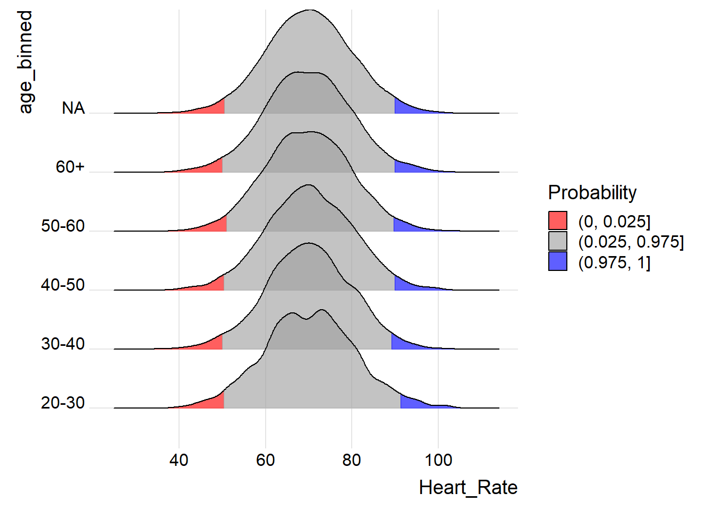
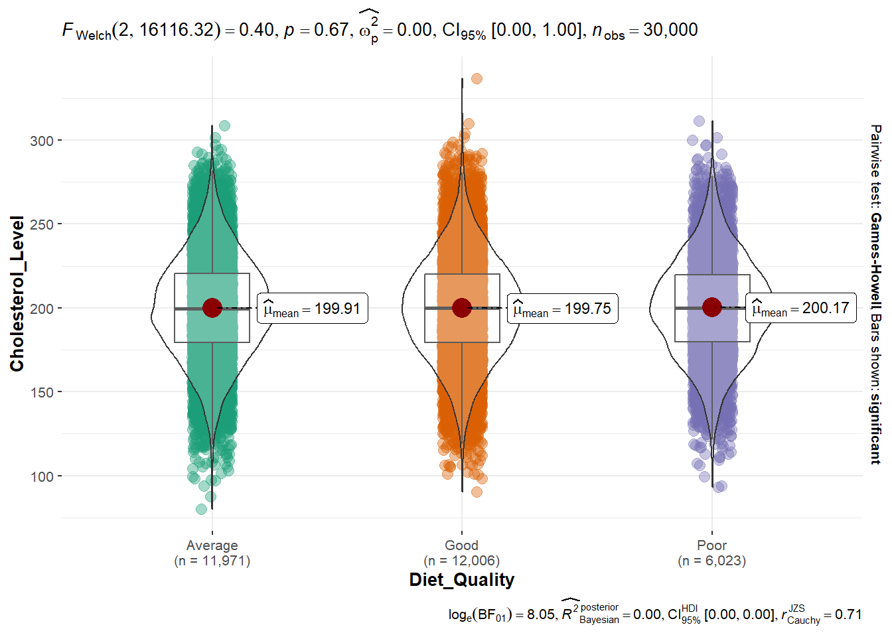
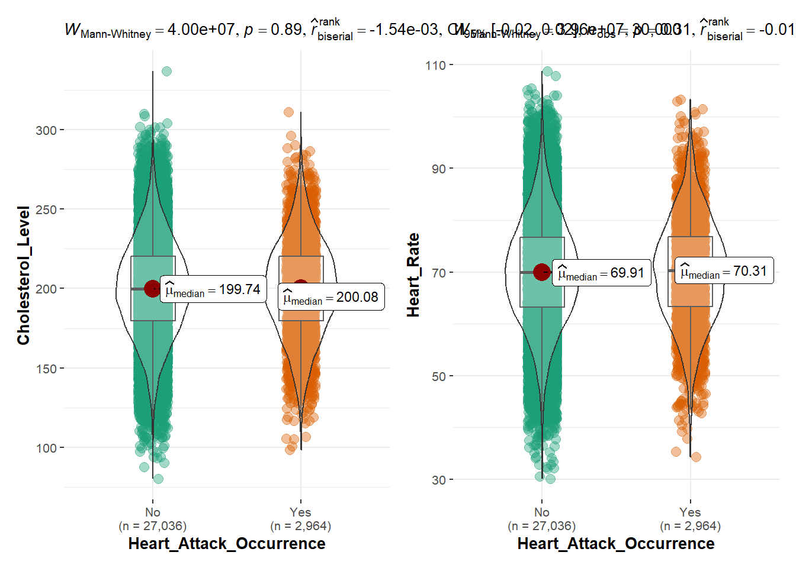

pacman::p_load(ggrepel,patchwork, ggdist,
ggridges, ggthemes, colorspace, tidyverse,ggplot2, ggExtra,ggstatsplot)Take-home_Ex01
1 Getting started
1.1 Installing and loading the required libraries
We load the following R packages using the pacman::p_load() function:
tidyverse: Core collection of R packages designed for data science
ggthemes: to use additional themes for ggplot2 patchwork: to prepare composite figure created using ggplot2
ggridges: to plot ridgeline plots
ggdist: for visualizations of distributions and uncertainty
ggstatsplot: for visulizations of statistical analyses along with the results in a clear, concise way
1.2 Importing data
For the purpose of this exercise, a data file called japan_heart_attack_dataset will be used. It consists of 30,000 observations. It is in csv file format.
heart_data <- read_csv("data/japan_heart_attack_dataset.csv")1.3 Glimpse of data
We first take a look at the data, and check if there are any duplicate entries. Using the glimpse() function, we see that the dataset consists of 30,000 rows and 33 columns. It also shows the column names, column type, and the first few entries of each column.
glimpse(heart_data)Rows: 30,000
Columns: 32
$ Age <dbl> 56, 69, 46, 32, 60, 25, 78, 38, 56, 75, 36, 40…
$ Gender <chr> "Male", "Male", "Male", "Female", "Female", "F…
$ Region <chr> "Urban", "Urban", "Rural", "Urban", "Rural", "…
$ Smoking_History <chr> "Yes", "No", "Yes", "No", "No", "No", "No", "Y…
$ Diabetes_History <chr> "No", "No", "No", "No", "No", "No", "Yes", "No…
$ Hypertension_History <chr> "No", "No", "No", "No", "No", "No", "Yes", "No…
$ Cholesterol_Level <dbl> 186.4002, 185.1367, 210.6966, 211.1655, 223.81…
$ Physical_Activity <chr> "Moderate", "Low", "Low", "Moderate", "High", …
$ Diet_Quality <chr> "Poor", "Good", "Average", "Good", "Good", "Go…
$ Alcohol_Consumption <chr> "Low", "Low", "Moderate", "High", "High", "Hig…
$ Stress_Levels <dbl> 3.644786, 3.384056, 3.810911, 6.014878, 6.8068…
$ BMI <dbl> 33.96135, 28.24287, 27.60121, 23.71729, 19.771…
$ Heart_Rate <dbl> 72.30153, 57.45764, 64.65870, 55.13147, 76.667…
$ Systolic_BP <dbl> 123.90209, 129.89331, 145.65490, 131.78522, 10…
$ Diastolic_BP <dbl> 85.68281, 73.52426, 71.99481, 68.21133, 92.902…
$ Family_History <chr> "No", "Yes", "No", "No", "No", "No", "No", "No…
$ Heart_Attack_Occurrence <chr> "No", "No", "No", "No", "No", "No", "No", "No"…
$ Extra_Column_1 <dbl> 0.40498852, 0.03627815, 0.85297888, 0.39085280…
$ Extra_Column_2 <dbl> 0.43330004, 0.51256694, 0.21959083, 0.29684675…
$ Extra_Column_3 <dbl> 0.62871236, 0.66839275, 0.61343656, 0.15572404…
$ Extra_Column_4 <dbl> 0.70160955, 0.11552874, 0.50800995, 0.87025144…
$ Extra_Column_5 <dbl> 0.49814235, 0.42381938, 0.90066981, 0.39035591…
$ Extra_Column_6 <dbl> 0.007901312, 0.083932768, 0.227205241, 0.40318…
$ Extra_Column_7 <dbl> 0.79458257, 0.68895108, 0.49634358, 0.74140891…
$ Extra_Column_8 <dbl> 0.29077922, 0.83016364, 0.75210679, 0.22396813…
$ Extra_Column_9 <dbl> 0.49719307, 0.63449028, 0.18150125, 0.32931387…
$ Extra_Column_10 <dbl> 0.52199452, 0.30204337, 0.62918031, 0.14319054…
$ Extra_Column_11 <dbl> 0.79965663, 0.04368285, 0.01827617, 0.90778075…
$ Extra_Column_12 <dbl> 0.72239788, 0.45166789, 0.06322702, 0.54232201…
$ Extra_Column_13 <dbl> 0.1487387, 0.8786714, 0.1465122, 0.9224606, 0.…
$ Extra_Column_14 <dbl> 0.8340099, 0.5356022, 0.9972962, 0.6262165, 0.…
$ Extra_Column_15 <dbl> 0.061632229, 0.617825340, 0.974455410, 0.22860…There are a total of seven attributes in the heart_data tibble data frame. Ten of them are categorical data type and the other seven are in continuous data type.
The categorical attributes are: Gender, Region, Smoking_History(Binary), Diabetes_History(Binary), Hypertension_History(Binary), Physical_Activity, Diet_Quality, Alcohol_Consumption, Family_History(Binary),Heart_Attack_Occurrence(Binary)
The continuous attributes are: Age, Cholesterol_Level, Stress_Levels, BMI, Heart_Rate, Systolic_BP, Diastolic_BP
2 Understanding the Data
Heart attack is the leading cause of death in the world. Heart attacks are mostly caused by your lifestyle. Do you smoke? Do you exercise? Do you eat right? Are you overweight? Do you keep your blood pressure under control? heart disease incorporates your family history.
2.1 Reviewing the dataset to understand Demographics Variables
2.1.1 Distribution and relationships involving Age
heart_data_age <- heart_data %>%
mutate(Aged_bins =
cut(Age,
breaks = c(10,20,30,40,50,60,70,80))
)
ggbarstats(heart_data_age,
x = Aged_bins,
y = Heart_Attack_Occurrence)
Observation: Middle-aged adults (30-40 and 50-60) seem to be more vulnerable to heart attacks compared to younger or older groups
2.1.2 Distribution and relationships involving Region and Gender
ggplot(heart_data, aes(x = Gender, fill = Heart_Attack_Occurrence)) +
geom_bar(position = "fill") +
facet_wrap(~ Region) +
labs(title = "Heart Attack Occurrence by Gender and Region")
Observation:proportion of heart attacks is higher for males in rural regions.
2.2 Reviewing the dataset to understand Health Metrics Variables
Health metrics are key indicators that can help identify an individual’s heart attack, including Cholesterol_level,Stress_levels, BMI, Heart_Rate, Systolic_BP, Diastolic_BP. These metrics are measurable factors related to a person’s overall health and lifestyle. When certain health metrics are not in an ideal range, they can contribute to the development of heart disease, which in turn increases the risk of a heart attack.
2.2.1 Measure Cholesterol_level variable - One sample test
ggplot(heart_data, aes(x = Age, y = Cholesterol_Level)) +
geom_point(aes(color = Heart_Attack_Occurrence)) +
ggtitle("Cholesterol_Level vs Age for Heart_Attack_Occurrence") +
xlab("Age") + ylab("Cholesterol_Level")
library(dplyr)
heart_attack_yes <- heart_data %>%
filter(Heart_Attack_Occurrence == "Yes")
heart_data$age_binned <- cut(heart_data$Age,
breaks = c(0, 10, 20, 30, 40, 50, 60),
labels = c("10-20", "20-30", "30-40", "40-50", "50-60", "60+"),
right = FALSE)
ggplot(heart_data,
aes(x = Heart_Rate,
y = age_binned,
fill = factor(stat(quantile))
)) +
stat_density_ridges(
geom = "density_ridges_gradient",
calc_ecdf = TRUE,
quantiles = c(0.025, 0.975)
) +
scale_fill_manual(
name = "Probability",
values = c("#FF0000A0", "#A0A0A0A0", "#0000FFA0"),
labels = c("(0, 0.025]", "(0.025, 0.975]", "(0.975, 1]")
) +
theme_ridges()
Observation: I didn’t find any variance in the variables like BMI, Systolic_BP, Diastolic_BP, Stress Levels, Cholesterol Level, and Heart Rate across different age groups. It’s possible that the age groups you’re using are not sufficient to capture the nuances in how these health indicators change over time.
2.2.2 Measure Heart_Rate variable
Creating a scatter plot with a marginal distribution (boxplot) to visualize the relationship between Heart Rate and Cholesterol Level and calculate the median of Heart Rate and Cholesterol Level for all observations.
p1 <- ggplot(data=heart_data,
aes(x= Cholesterol_Level,
y= Heart_Rate,
color=Heart_Attack_Occurrence)) +
geom_point() +
coord_cartesian(xlim=c(90,320),
ylim=c(30,110))
ggMarginal(p1, type = "boxplot",
groupColour = TRUE,
groupFill = TRUE)
ggbetweenstats(
data = heart_data,
x = Diet_Quality,
y = Cholesterol_Level,
type = "p",
mean.ci = TRUE,
pairwise.comparisons = TRUE,
pairwise.display = "s",
p.adjust.method = "fdr",
messages = FALSE
)
Observation: Mean cholesterol levels are significantly higher in the “Poor Diet_Quality” group compared to “Good” or “Average,” this suggests an unhealthy diet contributes to higher cholesterol.
p3 <- ggbetweenstats(
data = heart_data,
x = Heart_Attack_Occurrence,
y = Cholesterol_Level,
type = "np",
messages = FALSE
)
p4 <- ggbetweenstats(
data = heart_data,
x = Heart_Attack_Occurrence,
y = Heart_Rate,
type = "np",
messages = FALSE
)
p3 | p4
Observation: Cholesterol Level and Heart Rate seem to be higher for people who belong to the heart attack group.
2.2.3 Measure Blood pressure (Systolic_BP and Diastolic_BP) variable
p5 <- ggplot(data=heart_data, aes(x = Heart_Attack_Occurrence, y = Systolic_BP , color = Heart_Attack_Occurrence)) +
geom_jitter() +
labs(
title = "Systolic Blood Pressure",
x = "Heart Attack Occurrence",
y = "Systolic Blood Pressure (mmHg)"
) +
theme_classic()
p6 <- ggplot(data=heart_data, aes(x = Heart_Attack_Occurrence, y = Diastolic_BP , color = Heart_Attack_Occurrence)) +
geom_jitter() +
labs(
title = "Diastolic Blood Pressure",
x = "Heart Attack Occurrence",
y = "Diastolic Blood Pressure (mmHg)"
) +
theme_classic()
p7 <- ggplot(data=heart_attack_yes,
aes(x= Systolic_BP,
y= Diastolic_BP)) +
geom_point() +
geom_smooth(method=lm,
size=0.5) +
coord_cartesian(xlim=c(60,170),
ylim=c(40,115)) +
ggtitle("Systolic_BP and Diastolic_BP for Heart_Attack ")
(p5 / p6) | p7Observation: Based on the plot, there is no clear linear relationship between Blood Pressure and heart attack
2.3 Reviewing the dataset to understand Other health conditions Variables
To review the dataset and understand the Other Health Conditions Variables such as Smoking History, Diabetes History, Hypertension History, and Family History in relation to heart attack occurrence, it will help us understand the distributions, relationships, and any potential impact these variables have on the occurrence of heart attacks.
library(dplyr)
heart_attack_yes <- heart_data %>%
filter(Heart_Attack_Occurrence == "Yes")
heart_attack_no <- heart_data %>%
filter(Heart_Attack_Occurrence == "No")
ggbetweenstats(
data = heart_data,
x = Hypertension_History,
y = Heart_Rate,
type = "np",
messages = FALSE
)
Observation: heart rates for people with hypertension are very close to those in the heart attack group, it suggests that hypertension may be a key contributor to heart attacks.
3 Summary and conclusion
In this exercise, I performed visualization of the data to examine the relationship between heart attack occurrence and various variables in dataset.
I proceed univariate Visualizations, bivariate Visualization, and multivariate Visualizations to uncover how various factors like Cholesterol Level, Heart Rate, Age, and Blood Pressure relate to Heart Attack Occurrence.
However, dataset doesn’t have sufficient variability or has a lot of similar values in key variables, I might not see meaningful relationships. Everyone in the dataset has similar cholesterol levels or heart rates, there might not be much variance to detect significant patterns.